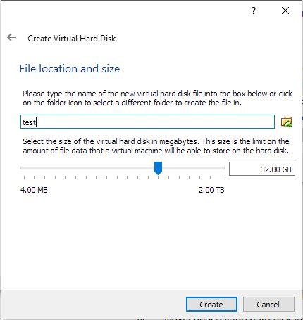
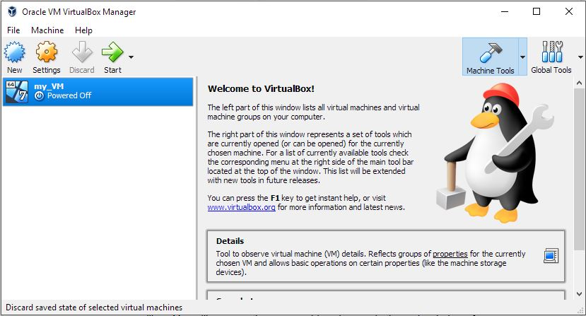
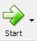

Click on the large "Download VirtualBox 5.2" button.
Select the package for your platform (Windows, OS X, etc.).
When the download completes, run the downloaded exe file and continue
through the installation wizard using default settings.
Configuring Virual Machine
To create a new virtual machine, click the new icon
in the upper-left corner.
In this screen, enter the custom name and type of the virtual machine
intending to be created. Click next.
Select the amount of RAM you would like to allocate for the virtual machine
(this will vary based on the machine). Click next.
Select which option for the virtual hard disk where the storage of the virtual
machine will be stored. It is recommended to "Create a virtual hard disk now".
Click next.
Next, select the hard disk file type (VDI is recommended). Click next.
Next, choose if the hard disk will be Dynamically allocated or a Fixed size.
Dynamically allocated is recommended. Click next.
Finally, confirm everything is correct in the last window, then click create.

You will now see the new virtual machine show up in the main window of VirtualBox Manager.

Click on the virutual machine you just created and click Start to run it.

Next, the system will request an iso file to boot the virtual machine from. Put the iso
of your choice in a known folder, then navigate to it by selecting the folder button.
Once the iso has been selected, click start to boot the virtual machine. Your virtual
machine is now ready to go.